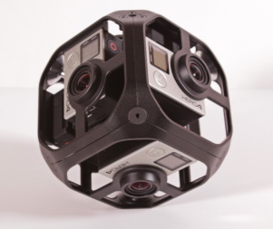
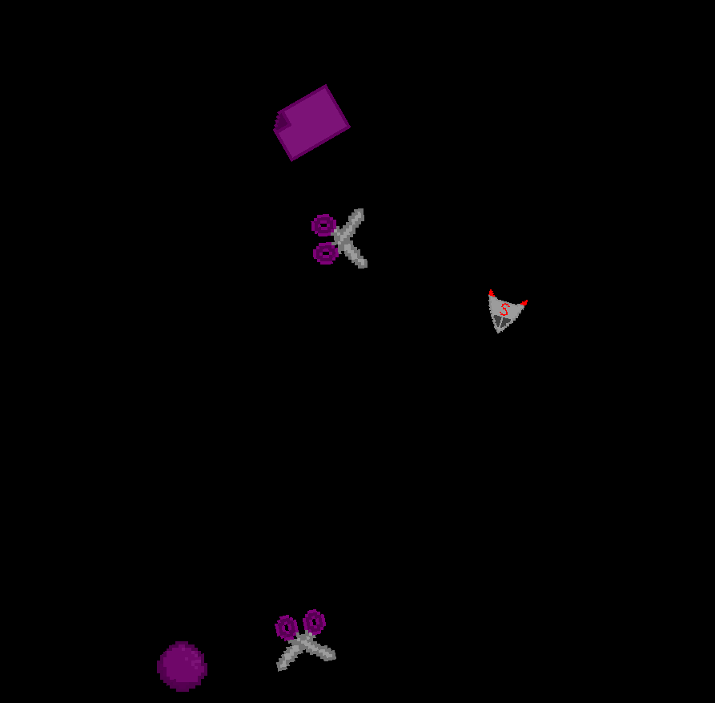

About Me

My name is Robert Dransfield, and I am currently enrolled at Boise State University, pursuing a bachelor's degree in GIMM (Games, Interactive, Mobile Media). This program is helping me develop skills in game development, web development, team planning, and smaller skills such as accessibility and optimization. My programming journey began in high school, where I gained proficiency in Java, HTML, CSS, and JavaScript, along with some knowledge of Python and SQL. I also learned C# at home.
With my bachelor's program, I have further enhanced my understanding of SQL, JavaScript, and C#, which has helped me manage projects in a team setting. This experience has taught me time management and brainstorming skills, as well as improved my communication skills to effectively share ideas and provide updates on the status of the projects we develop.
The purpose of this website is to showcase my skills and projects, as well as to provide a platform for potential employers to view my work. I am currently seeking internships or job opportunities in the game development field, where I can apply my skills and continue to grow as a developer.
Projects
360 VR Video
This college project was about using a 360 video camera, editing it into a 360 format, and then uploading it over Unity. On top of this, we had to use Unity's VR to experience it in the environment. This allowed our group to experience not only a 360 video but also use the VR headset to look at the video in the skybox of the game. We had to make the video interactive by adding buttons. Our group accomplished this by using Unity's UI system world space canvas to create buttons that would play, pause, toggle the audio on and off, as well as go to the next or previous video. We had to have some sort of topic for our project, and we decided to shoot videos of popular Boise tourist spots such as the Boise River, Boise Zoo, and the Idaho State Capitol Building.
My role in this project was to figure out how to add interactivity, such as player movement, the buttons, and adding functionality to the buttons. I learned how to link Meta Quest headsets to Unity and how to set up teleportation to move around the scene. I also learned to make objects such as a cube interactable using the Meta Quest controller. The most difficult part was to use buttons in the VR environment, as I had to figure out how to make the buttons appear in the environment instead of on the player camera and how to make them clickable with the controller. The things I learned helped me understand the base foundations of Unity VR and the different tools that come with it, such as being able to use a ladder in VR. Our group also had to learn how to work with the headset's unique rendering system, which made the skybox often appear pink or blue, and the inconsistency of the bug was quite the challenge to overcome. This was a great project where we were able to divide the work evenly across all members of the group.
Rock Paper Scissors Shoot

The goal for this project as a group was to utilize Vuforia AR recognition and combine it with Unity to create a game that could use at least 2 different AR recognition systems. This was our first time developing a game in a group setting. The freedom for this project was quite large, so we began brainstorming ideas for a game that could use Vuforia's AR recognition system. We decided to create a game that would be a simple rock-paper-scissors game, but as a card game. We would use Vuforia's AR recognition system to recognize the different physical playing card images through a camera. We also wanted to have something else other than just normal rock-paper-scissors, so we decided to have intervals where it would change into a game of asteroids. This made it so we had more of a fun game to play as you would have to go from playing rock-paper-scissors to playing a game of asteroids.
The game would gradually get faster and harder as the game continues. This led to a problem where you wouldn't have enough time to swap cards, and the game could sometimes not recognize the card in time. We also thought that a game of chance could lead to very short games. With problems like these, we made sure to provide enough information on screen to help the player understand what is going on, for example, a timer on screen to show when the next round starts. We also decided to give the player a chance to swap cards mid-round to help with a faster pace and to eliminate the randomness of the game and turn it into thinking on your feet.
My role in this project was to set up the AR recognition system and to help with the automated opponent the player would play against. I also helped set up the scene management. I was able to learn how to set up Vuforia's AR recognition system and how to use it in Unity. This helped me improve my skills in C# and how to read other people's code more effectively. We didn’t use a version control system, so we used Dropbox to share different versions of the project. While presenting this project to the rest of the class, we realized how unique our idea was. Most groups kept their game in 2D with some AR here and there, but our game had AR as a very prominent aspect of the game.
Personal Game

The first project I worked on in college, this was not a group project and had to be done in a short time frame. The goal of this project was to create a game from one of the stubs provided, but with a twist. The challenges we had to make sure I included were to have a set of physics changes to the gameplay. I chose to use the platformer stub to make a 2D platformer shooter game. The changes I decided to go for were a way to double jump, a way to change gravity, and a door that would be raised and then slowly drag back down with a slower force of gravity. I touched Unity before college and already had what I thought was a solid understanding of the engine, but working with this project showed me systems such as tilemaps, which made creating the level much easier. This was my first time using tilemaps, and I was able to learn how to use them effectively. I also learned how to use Unity's animation system, which made it easier to animate the player character.